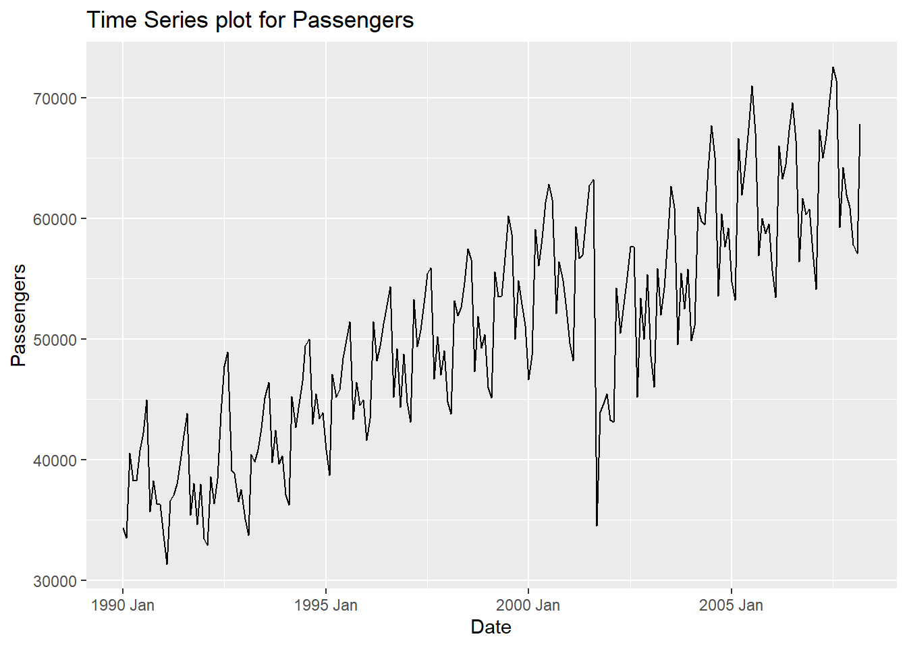
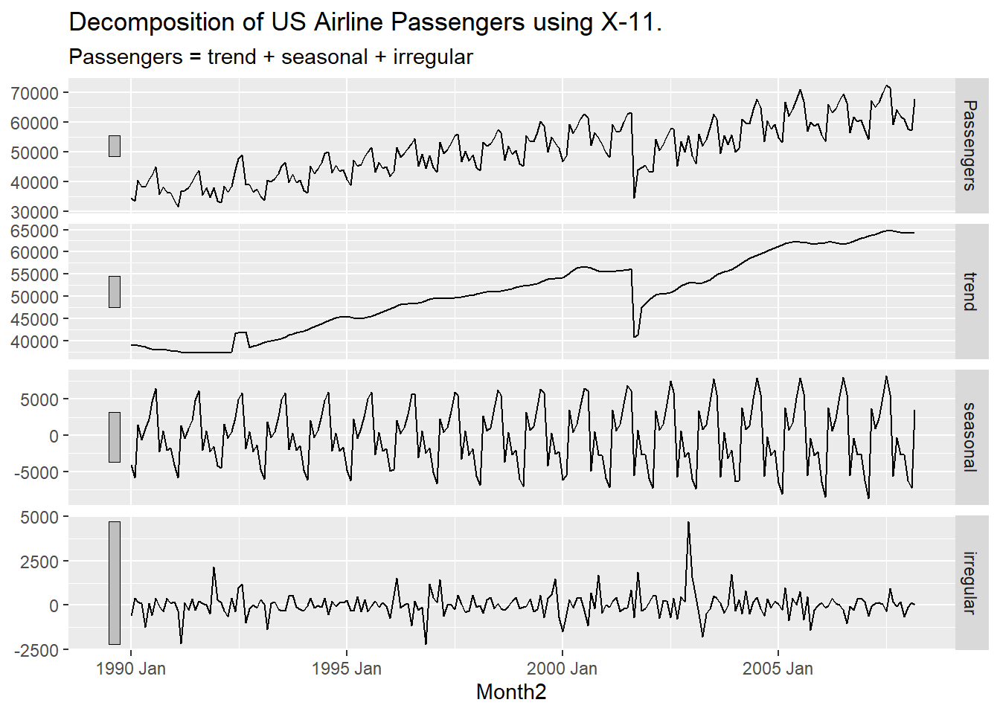

Chapter 6 Dynamic Regression
6.1 External Variables
Predictor variables are used for variety of things. Previously we have seen them used for accounting for trend and for seasonality. However, we can also use external variables to help make our forecasts better. Variables such as holiday effects, sales promotions, economic factors, and changes in policy are just a few examples.
These external / predictor variables are incorporated in a regression and the time series component is applied to the errors from this regression model:
\[ Y_t = \beta_0 + \beta_1X_1 + \cdots + \beta_kX_k + Z_t \]
The \(Z_t\) in the above equation is where the time series (typically ARIMA) model is applied. This form of modeling has many names - dynamic regression, ARIMAX, transfer functions, just to name a few.
6.2 Intervention Variables
An intervention variable is a variable that contains discrete values that flag the occurrence of an event affecting the response series. These variables are used to model and forecast the series itself or analyze the impact of the specific event. For example, We can measure the impact of a previous sales promotion and forecast a future sales promotion’s impact. We add these discrete variables in models to adjust the intercept of the model during the events.
The three most common types of intervention variables are:
Point interventions
Shift interventions
Ramp interventions
6.3 Point Intervention
A point intervention is typically denoted with a binary variable that flags when event occurs by taking a value of 1 with all other values set to zero. By putting this variable in our model, the coefficient on the intervention variable in the regression measures the estimated impact of that intervention.

6.4 Step Intervention
A step intervention is typically denoted with a binary variable that flags when an event occurs as well as the time period that the effects of the event last. For example, if you have a change in policy, you would have 0 values for dates before the policy change and values of 1 for every date after the change in policy. By putting this variable in our model, the coefficient on the intervention variable in the regression measures the estimated impact of that intervention’s shift.

6.5 Ramp Intervention
A ramp intervention is typically denoted by 0 values before an event and values that increase by 1 (1,2,3, etc.) starting with the event time point itself. By putting this variable in our model, the coefficient on the intervention variable in the regression measures the estimated slope of this new relationship after the event.

Implementation
Let’s see how to do this in each of our softwares!
6.5.1 R
For our dataset we have a step intervention at September, 2001. We can easily create a binary variable that takes a value of 1 after that month and 0 before. By using the formula structure in the ARIMA function in the model function, we can add this intervention to our model as well as build out an automatic seasonal ARIMA. We use the report and gg_tsresiduals() functions to evaluate our model.
train<-train %>% mutate(Sep11 = if_else(date >= yearmonth("2000 Sep"),1,0))
new_model<-train %>% model(ARIMA(Passengers ~ fourier(K=6)+trend()+Sep11))
report(new_model)## Series: Passengers
## Model: LM w/ ARIMA(3,0,0)(1,0,0)[12] errors
##
## Coefficients:
## ar1 ar2 ar3 sar1 fourier(K = 6)C1_12 fourier(K = 6)S1_12
## 0.6409 0.1090 0.0866 0.3491 -4398.041 1131.4722
## s.e. 0.0714 0.0829 0.0695 0.0744 407.575 406.8423
## fourier(K = 6)C2_12 fourier(K = 6)S2_12 fourier(K = 6)C3_12
## 623.1931 -439.0598 -2578.0661
## s.e. 247.1645 247.2930 208.2801
## fourier(K = 6)S3_12 fourier(K = 6)C4_12 fourier(K = 6)S4_12
## -1306.9302 252.5545 -374.3603
## s.e. 208.8032 188.8733 188.8001
## fourier(K = 6)C5_12 fourier(K = 6)S5_12 fourier(K = 6)C6_12 trend()
## 947.0734 -2140.5655 -340.8753 99.9567
## s.e. 168.4445 169.0065 112.9862 20.8172
## Sep11 intercept
## 3698.924 38175.713
## s.e. 2071.972 2077.692
##
## sigma^2 estimated as 3391371: log likelihood=-1841.98
## AIC=3721.96 AICc=3726.03 BIC=3785.29future_val <- tibble(
date = yearmonth("2007 Apr") + 0:11, # forecast 6 months ahead
Sep11 = rep(1, 12) # assumed future ad spend
) %>%
as_tsibble(index = date)
for_newmodel<-fabletools::forecast(new_model, new_data = future_val)
for_newmodel %>% autoplot(USAirlines_ts)+ geom_line(aes(y=.fitted),col="#D55E00",data=augment(new_model))
## Series: Passengers
## Model: LM w/ ARIMA(3,0,0)(1,0,0)[12] errors
##
## Coefficients:
## ar1 ar2 ar3 sar1 fourier(K = 6)C1_12 fourier(K = 6)S1_12
## 0.6409 0.1090 0.0866 0.3491 -4398.041 1131.4722
## s.e. 0.0714 0.0829 0.0695 0.0744 407.575 406.8423
## fourier(K = 6)C2_12 fourier(K = 6)S2_12 fourier(K = 6)C3_12
## 623.1931 -439.0598 -2578.0661
## s.e. 247.1645 247.2930 208.2801
## fourier(K = 6)S3_12 fourier(K = 6)C4_12 fourier(K = 6)S4_12
## -1306.9302 252.5545 -374.3603
## s.e. 208.8032 188.8733 188.8001
## fourier(K = 6)C5_12 fourier(K = 6)S5_12 fourier(K = 6)C6_12 trend()
## 947.0734 -2140.5655 -340.8753 99.9567
## s.e. 168.4445 169.0065 112.9862 20.8172
## Sep11 intercept
## 3698.924 38175.713
## s.e. 2071.972 2077.692
##
## sigma^2 estimated as 3391371: log likelihood=-1841.98
## AIC=3721.96 AICc=3726.03 BIC=3785.29
We can also check if the model produces white noise residuals using the augment and features functions with the ljung_box option.
## # A tibble: 1 × 3
## .model lb_stat lb_pvalue
## <chr> <dbl> <dbl>
## 1 ARIMA(Passengers ~ fourier(K = 6) + trend() + Sep11) 25.2 0.831We can see from the output above that our model now accounts for the outlier that we previously saw in our data. Notice how our model has changed slightly after accounting for this outlier. This will improve the forecasts going forward, even though we do not have any outliers in our test dataset.
To forecast these values going forward, we need future values of our predictor variable. For this dataset, we have our Sep11 variable that we forecast to have values of 0 for each of the 12 observations we are forecasting for airline passengers. To do this we create another variable (of the same name) that has future values in our test dataset. We then use the forecast function with both the model and the test dataset as inputs. The forecast function will be expecting a test dataset that contains the Sep11 variable in it.
6.5.2 Python
For our dataset we have a point intervention at September, 2001. We can easily create a binary variable that takes a value of 1 during that month and 0 otherwise. By using the merge function on our training dataset we can add this new variable to our training data. Now, in the AutoARIMA function, we can add this intervention to our model as well as build out a seasonal ARIMA by just putting the training dataset with this new column in the .fit function. This means we have to be careful about which datasets we use since Python automatically assumes any additional column (beyond unique_id, ds, and y) are predictor variables. We use the .fitted_[0][0].model_.get() and function to evaluate our model by asking for the order of the ARIMA model (arma), the coefficients in the ARIMA model (coef) and the AIC (aic).
from statsforecast.models import AutoARIMA, ARIMA
Sep11 = np.full(shape = 207, fill_value = 0)
d_X = {'unique_id': 1, 'ds': train.index, 'Sep11': Sep11}
X_sf = pd.DataFrame(data = d_X)
X_sf.loc[140, 'Sep11'] = 1
train_sf_X = train_sf.merge(X_sf, how = 'left', on = ['unique_id', 'ds'])
model_ARIMAX = StatsForecast(models = [AutoARIMA(season_length = 12, allowdrift = True)], freq = 'ME')
model_ARIMAX.fit(df = train_sf_X)## StatsForecast(models=[AutoARIMA])## (2, 1, 1, 2, 12, 0, 1)## {'ar1': 0.13134602931994888, 'ar2': 0.5552223660064508, 'ma1': 0.48357739638505537, 'sar1': -0.5813428814692551, 'sma1': -0.018930442731758503, 'sma2': -0.390927638995888, 'ex_1': -14131.99804734699}## 3491.097241911011We can also check if the model produces white noise residuals using the acorr_ljungbox from the statsmodels package on the residuals from our model.
sm.stats.acorr_ljungbox(model_ARIMAX.fitted_[0][0].model_.get("residuals"), lags = [12], model_df = 5)## lb_stat lb_pvalue
## 12 18.351359 0.010481We can see from the output above that our model now accounts for the outlier that we previously saw in our data. Notice how our model has changed slightly after accounting for this outlier. This will improve the forecasts going forward, even though we do not have any outliers in our validation dataset.
To forecast these values going forward, we need future values of our predictor variable. For this dataset, we have our Sep11 variable that we forecast to have values of 0 for each of the 12 observations we are forecasting for airline passengers. To do this we create another variable (of the same name) that has future values. This new variable is then put into the test dataset which gets passed inside of the .forecast function. The function is expecting a variable in the test dataset called Sep11 in it.
Sep11 = np.full(shape = 12, fill_value = 0)
d_X = {'unique_id': 1, 'ds': test.index, 'Sep11': Sep11}
X_sf = pd.DataFrame(data = d_X)
test_sf_X = test_sf.merge(X_sf, how = 'left', on = ['unique_id', 'ds'])
model_ARIMAX_for = model_ARIMAX.forecast(df = train_sf_X, h = 12, X_df = X_sf, level = [95])We can plot our forecasts just as we have done previously.
## C:\PROGRA~3\ANACON~1\Lib\site-packages\statsforecast\core.py:1447: FutureWarning: Passing the ids as the index is deprecated. Please provide them as a column instead.
## warnings.warn(6.5.3 SAS
For our dataset we have a point intervention at September, 2001. We can easily create a binary variable that takes a value of 1 during that month and 0 otherwise. We also need to create a dataset that blanks out all the values of the Passenger variable past in our test window. SAS needs a dataset with the training data as well as future values of the predictor variables to forecast with dynamic regression.
From there we use the PROC ARIMA procedure with this newly created dataset. With the IDENTIFY statement we give our target variable with the VAR option. Remember, the (12) after the target variable signals that we want to take the seasonal difference. We also include the CROSSCORR option with our predictor variable Sep11. We include the MINIC option as well to help with order selection of the ARIMA model. We then use the ESTIMATE statement to define our model, here an ARIMA(1,0,0)(1,1,1) model. The INPUT option is where we put our Sep11 variable into the actual model. We finish with the FORECAST statement with the LEAD option set to 12 to forecast the next 12 observations.
data usair_pred;
set usair;
Sep11 = 0;
if date = '1sep2001'd then Sep11 = 1;
if date > '1mar2007'd then Passengers = .;
run;
proc arima data = work.usair_pred plots = all;
identify var = Passengers(12) nlag = 24 crosscorr = (Sep11) minic P=(0:15) Q=(0:15);
estimate p = (1)(12) q = (12) input = (Sep11);
forecast lead = 12 id = date interval = month;
run;


We can check if the model produces white noise residuals by looking at the results above with the autocorrelations of the residuals and the corresponding p-values. We can also look at the white noise plot. Both of these seem to show white noise residuals.
We can see from the output above that our model now accounts for the outlier that we previously saw in our data. Notice how our model has changed slightly after accounting for this outlier. This will improve the forecasts going forward, even though we do not have any outliers in our test dataset.
Let’s look at our forecast plot from our output like we have done previously.

6.6 Predictor Variables
Most forecasting models also need to account for explanatory variables such as price, advertising spending, or income. These kinds of models can be called any of the following: dynamic regression, ARIMAX, transfer functions. Through the examples above, we have seen how to implement this in R.
However, there are often lagged variables (lags of the predictor variables) as well as (or instead of) immediate impacts of these variables. In other words, previous values of the predictor variables may still play a role in the current prediction of the target variable. The question becomes, how many lags of a variable need to be included in the model. There are multiple ways to evaluate how many lags of a predictor variable you need in a model.
The first, more theoretical approach, involves cross correlations and pre-whitening of series. This approach is time consuming, requires building a model for the predictor variables themselves, and is therefore best used for small numbers of predictor variables.
The second approach evaluates many difference combinations of lags of the predictor variable in many different models. These models are compared on a metric like AIC/BIC on a validation dataset to see which models the data best. This approach is more efficient, handles many variables much easier, and is similar in accuracy to the first approach.
Let’s see how to do this in each of our softwares!
6.6.1 R
We will take the same approach as above to building a dynamic regression in R. We will still use the formula approach to put in our model in the ARIMA function of the model function on our training data. R has a built in lag function that we can apply to predictor variables to lag them. We will put in the original Sep11 variable and lag variables for lags 1, 2, 3, and 12. Essentially, we believe that the effects of the attacks on September 11 were felt for 3 months as well as on the one year anniversary 12 months later. From there we will build two ARIMA models. The first is a specific model using the model we developed by hand in the previous section on seasonal ARIMA models. This is the ARIMA (1,0,0)(1,1,1) model. We input this model using the pdq and PDQ functions for regular and seasonal orders respectively. Next, we will leave out the pdq and PDQ functions so R will automatically search for the “best” ARIMA model. Lastly, we use the glance function to take a look at the performance of these models on training data.
model_ARIMAX <- train %>%
model(
hand = ARIMA(Passengers ~ 1 + Sep11 + lag(Sep11) + lag(Sep11, 2) +
lag(Sep11, 3) + lag(Sep11, 12) + pdq(1,0,0) + PDQ(1,1,1)),
auto = ARIMA(Passengers ~ Sep11 + lag(Sep11) + lag(Sep11, 2) +
lag(Sep11, 3) + lag(Sep11, 12))
)
glance(model_ARIMAX)## # A tibble: 2 × 8
## .model sigma2 log_lik AIC AICc BIC ar_roots ma_roots
## <chr> <dbl> <dbl> <dbl> <dbl> <dbl> <list> <list>
## 1 hand 1967134. -1590. 3199. 3201. 3232. <cpl [13]> <cpl [12]>
## 2 auto 1937233. -1579. 3177. 3178. 3210. <cpl [26]> <cpl [0]>Based on the likelihood-based metrics above like AIC and BIC, the automatically selected ARIMA model beats out the by hand model, but all the metrics are rather close. Let’s also evaluate the residuals from these models using the gg_tsresiduals() function as well as the features function with the ljung_box option for white noise testing. Since we have multiple models in the model function above, we will need to isolate the models with the select function and filter function respectively for the analysis below.

augment(model_ARIMAX) %>%
filter(.model == "hand") %>%
features(.innov, ljung_box, lag = 36, dof = 5)## # A tibble: 1 × 3
## .model lb_stat lb_pvalue
## <chr> <dbl> <dbl>
## 1 hand 57.1 0.00294
augment(model_ARIMAX) %>%
filter(.model == "auto") %>%
features(.innov, ljung_box, lag = 36, dof = 5)## # A tibble: 1 × 3
## .model lb_stat lb_pvalue
## <chr> <dbl> <dbl>
## 1 auto 50.5 0.0150The by hand model has a higher p-value for the Ljung-Box white noise test, but both models result, statistically, in white noise residuals.
Let’s forecast both of these models to compare the results with the test dataset. To forecast these values going forward, we need future values of our predictor variable. For this dataset, we have our Sep11 variable that we forecast to have values of 0 for each of the 12 observations we are forecasting for airline passengers. To do this we create another variable (of the same name) that has future values in our test dataset. We then use the forecast function with both the model and the test dataset as inputs. The forecast function will be expecting a test dataset that contains the Sep11 variable in it. We also plot the two forecasts together on the same plot.
test$Sep11 <- rep(0, 12)
model_ARIMAX_for <- fabletools::forecast(model_ARIMAX, test)
model_ARIMAX_for %>%
autoplot(train) +
autolayer(fitted(model_ARIMAX), col = "blue", linetype = "dashed") +
ylab("Airlines Passengers") +
geom_vline(xintercept = as_date("2007-03-15"), color="orange", linetype="longdash")We can use the accuracy function from the fabletools package to evaluate these forecasts. The only inputs for this function are the model object and the test dataset.
## # A tibble: 2 × 10
## .model .type ME RMSE MAE MPE MAPE MASE RMSSE ACF1
## <chr> <chr> <dbl> <dbl> <dbl> <dbl> <dbl> <dbl> <dbl> <dbl>
## 1 auto Test -2110. 3019. 2642. -3.39 4.19 NaN NaN 0.414
## 2 hand Test -2088. 3114. 2653. -3.39 4.24 NaN NaN 0.602Although the automatically selected ARIMA model barely beat the hand selected model in the training dataset metrics, it appears as if the ARIMA models selected by hand has both a better mean absolute error (MAE) and mean absolute percentage error (MAPE) on the test dataset.
6.6.2 Python
We will take the same approach as above to building a dynamic regression in Python. For our dataset we have a point intervention at September, 2001. We can easily create a binary variable that takes a value of 1 during that month and 0 otherwise. However, we also have to create some lag variables to be added to the model as well. We will put in the original Sep11 variable and lag variables for lags 1, 2, 3, and 12. Essentially, we believe that the effects of the attacks on September 11 were felt for 3 months as well as on the one year anniversary 12 months later. By using the merge function on our training dataset we can add these new variables to our training data.
Sep11 = np.full(shape = 207, fill_value = 0)
Sep11_L1 = np.full(shape = 207, fill_value = 0)
Sep11_L2 = np.full(shape = 207, fill_value = 0)
Sep11_L3 = np.full(shape = 207, fill_value = 0)
Sep11_L12 = np.full(shape = 207, fill_value = 0)
d_X = {'unique_id': 1, 'ds': train.index, 'Sep11': Sep11, 'Sep11_L1': Sep11_L1, 'Sep11_L2': Sep11_L2, 'Sep11_L3': Sep11_L3, 'Sep11_L12': Sep11_L12}
X_sf = pd.DataFrame(data = d_X)
X_sf.loc[140, 'Sep11'] = 1
X_sf.loc[141, 'Sep11_L1'] = 1
X_sf.loc[142, 'Sep11_L2'] = 1
X_sf.loc[143, 'Sep11_L3'] = 1
X_sf.loc[152, 'Sep11_L12'] = 1
train_sf_X = train_sf.merge(X_sf, how = 'left', on = ['unique_id', 'ds']) From there we will build two ARIMA models. The first is a specific model using the model we developed by hand in the previous section on seasonal ARIMA models. This is the ARIMA (1,0,0)(1,1,1) model. We input this model using the order and seasonal_order functions for regular and seasonal orders respectively. Next, in the AutoARIMA function we will let Python automatically select the best ARIMA model. ,We can add the intervention variables to our model by just putting the training dataset with these new columns in the .fit function. This means we have to be careful about which datasets we use since Python automatically assumes any additional column (beyond unique_id, ds, and y) are predictor variables. We use the .fitted_[0][0].model_.get() and function to evaluate our automatically selected ARIMA model by asking for the order of the ARIMA model (arma), the coefficients in the ARIMA model (coef) and the AIC (aic). If we change the function to .fitted_[0][1].model_.get() then we can get the second model we built in the StatsForecast function, the ARIMA we selected by hand.
model_ARIMAX = StatsForecast(models = [AutoARIMA(season_length = 12, allowdrift = True), ARIMA(order = (1, 0, 0), season_length = 12, seasonal_order = (1,1,1), include_drift = True)], freq = 'ME')
model_ARIMAX.fit(df = train_sf_X)## StatsForecast(models=[AutoARIMA,ARIMA])## (1, 0, 0, 2, 12, 0, 1)## {'ar1': 0.7375177578972858, 'sma1': -0.5870603509062613, 'sma2': -0.039390189139568606, 'ex_1': -16737.0, 'ex_2': -10928.4990234375, 'ex_3': -7799.9990234375, 'ex_4': -8401.4990234375, 'ex_5': -5209.9990234375}## 3481.4703680965195## (1, 0, 1, 1, 12, 0, 1)## {'ar1': 0.6651175398360181, 'sar1': -0.0486860850742297, 'sma1': -0.5537376546510462, 'drift': 123.6717948717949, 'ex_1': -16737.000000000113, 'ex_2': -10928.499999999995, 'ex_3': -7799.999999999993, 'ex_4': -8401.5, 'ex_5': -5210.000000000056}## 3419.635116900134Based on the likelihood-based metrics above like AIC, the automatically selected ARIMA model beats out the by hand model, but all the metrics are rather close. Let’s also evaluate the residuals from these models using the acorr_ljungbox from the statsmodels package on the residuals from our model.
sm.stats.acorr_ljungbox(model_ARIMAX.fitted_[0][0].model_.get("residuals"), lags = [12], model_df = 5)## lb_stat lb_pvalue
## 12 37.068832 0.000005sm.stats.acorr_ljungbox(model_ARIMAX.fitted_[0][1].model_.get("residuals"), lags = [12], model_df = 5)## lb_stat lb_pvalue
## 12 47.669309 4.131861e-08The by hand model has a higher p-value for the Ljung-Box white noise test, but both models result, statistically, in not being white noise residuals.
Let’s forecast both of these models to compare the results with the test dataset. To forecast these values going forward, we need future values of our predictor variables. For this dataset, we have our Sep11 variable and all the lags of it we created that we forecast to have values of 0 for each of the 12 observations we are forecasting for airline passengers. To do this we create other variables (of the same name) that have future values in our test dataset. We then use the forecast function with both the model and the test dataset as inputs. We also plot the two forecasts together on the same plot.
Sep11 = np.full(shape = 12, fill_value = 0)
Sep11_L1 = np.full(shape = 12, fill_value = 0)
Sep11_L2 = np.full(shape = 12, fill_value = 0)
Sep11_L3 = np.full(shape = 12, fill_value = 0)
Sep11_L12 = np.full(shape = 12, fill_value = 0)
d_X = {'unique_id': 1, 'ds': test.index, 'Sep11': Sep11, 'Sep11_L1': Sep11_L1, 'Sep11_L2': Sep11_L2, 'Sep11_L3': Sep11_L3, 'Sep11_L12': Sep11_L12}
X_sf = pd.DataFrame(data = d_X)
test_sf_X = test_sf.merge(X_sf, how = 'left', on = ['unique_id', 'ds'])
model_ARIMAX_for = model_ARIMAX.forecast(df = train_sf_X, h = 12, X_df = X_sf, level = [95])## C:\PROGRA~3\ANACON~1\Lib\site-packages\statsforecast\core.py:492: FutureWarning: In a future version the predictions will have the id as a column. You can set the `NIXTLA_ID_AS_COL` environment variable to adopt the new behavior and to suppress this warning.
## warnings.warn(
We can use the forecasted values from the above code to evaluate these forecasts by comparing them to the test dataset.
error = np.array(test['Passengers']) - np.array(model_ARIMAX_for['AutoARIMA'])
MAPE = np.mean(abs(error)/test['Passengers'])*100
print("Auto. MAE =", np.mean(abs(error)), "\nAuto. MAPE =", MAPE)## Auto. MAE = 3705.2900390625
## Auto. MAPE = 5.759043319108617error = np.array(test['Passengers']) - np.array(model_ARIMAX_for['ARIMA'])
MAPE = np.mean(abs(error)/test['Passengers'])*100
print("Hand MAE =", np.mean(abs(error)), "\nHand MAPE =", MAPE)## Hand MAE = 1123.05859375
## Hand MAPE = 1.7172460911949101Although the automatically selected ARIMA model barely beat the hand selected model in the training dataset metrics, it appears as if the ARIMA models selected by hand has both a better mean absolute error (MAE) and mean absolute percentage error (MAPE) on the test dataset.
6.6.3 SAS
For our dataset we have a point intervention at September, 2001. We can easily create a binary variable that takes a value of 1 during that month and 0 otherwise. We also need to create a dataset that blanks out all the values of the Passenger variable past in our test window. SAS needs a dataset with the training data as well as future values of the predictor variables to forecast with dynamic regression.
From there we use the PROC ARIMA procedure with this newly created dataset. With the IDENTIFY statement we give our target variable with the VAR option. Remember, the (12) after the target variable signals that we want to take the seasonal difference. We also include the CROSSCORR option with our predictor variable Sep11. We include the MINIC option as well to help with order selection of the ARIMA model. We then use the ESTIMATE statement to define our model, here an ARIMA(1,0,0)(1,1,1) model. The INPUT option is where we put our Sep11 variable into the actual model. The (1,2,3,12) in front of the Sep11 variable creates what is formally called a transfer function. It creates a lag structure on the variable (essentially adding lags of that variable) at the lags of 1,2,3, and 12. We finish with the FORECAST statement with the LEAD option set to 12 to forecast the next 12 observations.
data usair_pred;
set usair;
Sep11 = 0;
if date = '1sep2001'd then Sep11 = 1;
if date > '1mar2007'd then Passengers = .;
run;
proc arima data = work.usair_pred plots = all;
identify var = Passengers(12) nlag = 24 crosscorr = (Sep11) minic P=(0:15) Q=(0:15);
estimate p = (1)(12) q = (12) input = ((1,2,3,12)Sep11);
forecast lead = 12 id = date interval = month out = work.ARIMAX_f;
run;


We can check if the model produces white noise residuals by looking at the results above with the autocorrelations of the residuals and the corresponding p-values. We can also look at the white noise plot. Both of these seem to show white noise residuals.
We can see from the output above that our model now accounts for the outlier that we previously saw in our data. Notice how our model has changed slightly after accounting for this outlier. This will improve the forecasts going forward, even though we do not have any outliers in our test dataset.
Let’s look at our forecast plot from our output like we have done previously.

We need to isolate just the forecasted observations from the output above. For that we use the DATA STEP to just look at the predicted values from the two previous models beyond the March, 2007 training observations with the WHERE statement. Next, we use the MERGE statement in another DATA STEP to merge the original test dataset with the predicted values from the above model. Lastly, we calculate the absolute error and absolute percentage error for each observation with our last DATA STEP. To get the average of these calculations, we throw our test dataset into the PROC MEANS procedure where we specify these variables with the VAR statement.
data ARIMAX_f;
set ARIMAX_f;
where date > '1mar2007'd;
Predict_ARIMAX = Forecast;
keep Predict_ARIMAX;
run;
data test;
merge test ARIMAX_f;
run;
data test;
set test;
AE_ARIMAX = abs(Passengers - Predict_ARIMAX);
APE_ARIMAX = abs(Passengers - Predict_ARIMAX)/Passengers*100;
run;
proc means data = test;
var AE_ARIMAX APE_ARIMAX;
run;
In the output above we can see the mean absolute error (MAE) and mean absolute percentage error (MAPE) for this new dynamic regression model with all the lags.